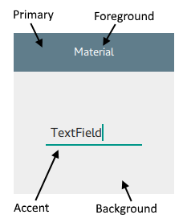

Dark Mode¶
Themes¶
Dark mode is important, so we'll cover it early.
There are a few themes to choose from:
-
-
Microsoft esque
- Text:
text - Accent:
accent - Primary:
None
- Text:
-
-
-
Google's Material
- Text:
foreground - Accent:
accent - Primary:
primary

- Text:
-
-
-
Similar to the default widgets
- Text:
text - Accent:
None - Primary:
None
- Text:

-
Using Themes to set Dark Mode¶
Introduction¶
Material and Universal provide a simple way to toggle dark mode. Fusion will look at the system, however, it's not clear to me what it looks for specifically or how it can be dynamically controlled, see generally 1. Whilst, personally, I prefer the Fusion style, Universal and Material look great so I'll use those moving forward. Note that Material can have a somewhat mobile centric design with widgets like buttons, so be mindful when switching between styles.
Overview¶
To toggle Dark mode:
-
use a ternary operator with a property like so:
ApplicationWindow { id: root // Set dark mode initially property bool darkMode: true // Create a contract when that changes Universal.theme: root.darkMode ? Universal.Dark : Universal.Light -
Create an Action to change that property
menuBar: MenuBar { id: menuBar Menu { id: menuEdit title: qsTr("&View") Action { text: qsTr("&Dark Mode") shortcut: "Ctrl+D" onTriggered: root.darkMode = !root.darkMode } } } -
Use
color: [Universal | Material].{foreground, background}throughout to get the correct colours.
Minimum Working Example¶
This example demonstrates how to implement dark mode with a minimum working example

import QtQuick
import QtQuick.Window
import QtQuick.Controls
import QtQuick.Layouts
// Load the theme
import QtQuick.Controls.Universal
ApplicationWindow {
id: root
// Custom handle component for SplitView
width: 640
height: 480
visible: true
title: "Desktop Application Example"
// Set theme variables
// Set dark mode initially
property bool darkMode: true
// Create a contract when that changes
Universal.theme: root.darkMode ? Universal.Dark : Universal.Light
// Set the font size
property int font_size: 30
menuBar: MenuBar {
id: menuBar
Menu {
id: contextMenu
title: "&File"
Action {
text: "&Open"
shortcut: "Ctrl+O"
onTriggered: console.log("Usage Guide")
}
}
Menu {
id: menuEdit
title: qsTr("&View")
Action {
text: qsTr("&Dark Mode")
shortcut: "Ctrl+D"
onTriggered: root.darkMode = !root.darkMode
}
}
}
Rectangle {
anchors.centerIn: parent
Column {
Column {
Slider {
id: font_slider
from: 10
to: 60
value: root.font_size
stepSize: 1
onValueChanged: {
root.font_size = value;
}
}
}
Label {
text: root.darkMode ? "Dark Mode" : "Light Mode"
font.pixelSize: root.font_size
}
}
}
}